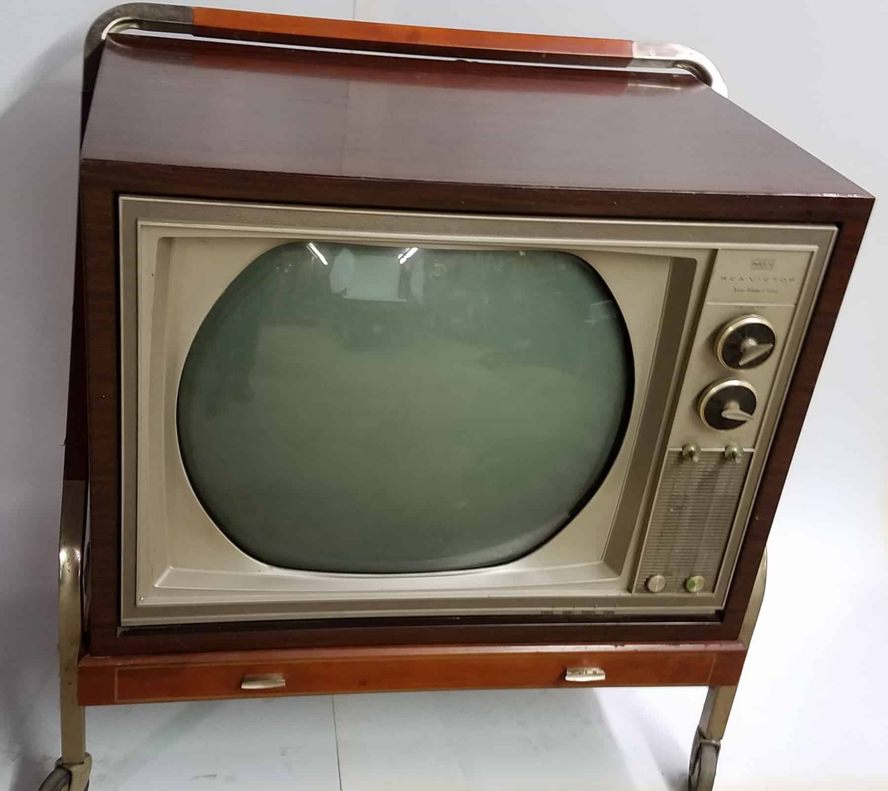
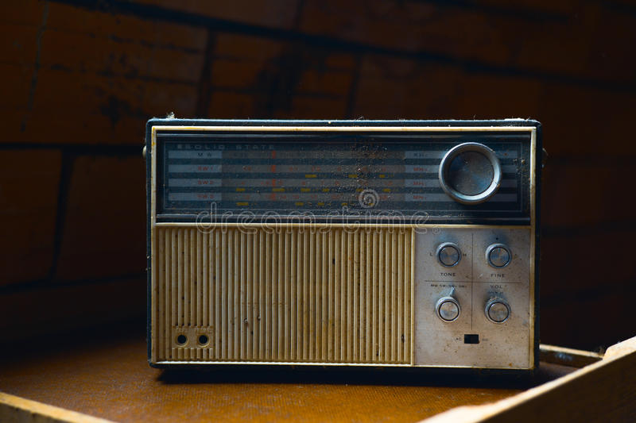
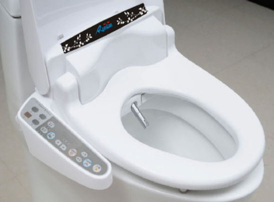

Weikun Shen Reading 2

Q1
Most of the game equipment has a very obvious interactive design. This is because the characteristics of the game itself is to let players receive the results of the interaction, but in different ways. This is a clever explanation for why people are so keen on playing games. Because the interaction that games bring is fast and intense. It's absolutely fascinating that results that people can't get in real life are reflected on the screen through simple finger movements in the game. Earlier game consoles, such as NDS or GBA, could only respond to the feedback of the handle buttons through vision. However, Sony's play station put the motor into the handle to make it vibrate. Not only that, there are some games, such as somatosensory games, that are designed to give players better interaction. For example, VR technology, or even AR technology, which has become more popular in the past decade, has made interaction more intense. Through the simulation of human vision, VR creates a virtual interactive space for users. Although most of the interaction is visual and auditory, I think in the near future, the interaction brought by Games will become more and more intense.
Q2
Gesamtkunstwerk is described in the article as directly interacting with three senses: hearing, vision, and touch, and triggering a fourth sense through the color and name of the phone: the sense of taste. Users can enjoy more mysterious and personalized functions through dramatic animation, sound effects and even vibration on the mobile screen. These novel features make simple information tools full of beauty.
Q3
In this work, sound is the only protagonist, while hearing is the only sense that can make us feel this work. This gives the role of Sound Designer a much higher status and importance in the whole work. The work of Sound Designer is very interesting in my personal understanding, but it is also very easy to be ignored. They make movies and games more vivid and real, even so real that the audience doesn't feel they have been made and added to. However, there is only sound in this work, which makes us enjoy the auditory feast brought by sound Designer. This work poses a higher challenge to Sound Deigner. He creates sounds that express emotions, stories, and I have to admit, they're very admirable.
Q4
Sketchophism creates a sense of familiarity for the audience by imitating certain materials, while flat design maintains the authenticity of a medium, which usually makes people feel simple and practical.
Mimicry allows producers to produce works that still satisfy the audience's taste at a lower cost. I don't know why simple and practical UI design fascinates customers, perhaps because of the popularity of minimalism
Q5

Although previous TV interfaces existed only on the TV itself, unlike the standard infrared remote, they were compact and varied. The designer seems to have gone to great lengths to make the appliance satisfactory, despite the limitations of the technology.

I think it's interesting that the interface design of a radio is very similar to that of a TELEVISION. It seems that the products of an era are very similar in style, and I think this partly reflects the way people lived at that time.

It's been almost 70 years since 1950, but our technology has improved a lot. People used to focus on entertainment such as TV and radio, but now people even install a lot of interfaces on the toilet (modern people are boring enough). Either way, it's a testament to technological progress.
Q6
It's not hard to find out that actually human being are becoming much lazier and trying to invent everything that are capable of doing anything for them.But, it's not totally a bad thing afterall, probably. So, why not add more stylish and functional interfaces on the daily life furnitures like sofa, and the wardrobe. Adding some functions which can help people find the best suit or do a massage for them would be a nice idea.